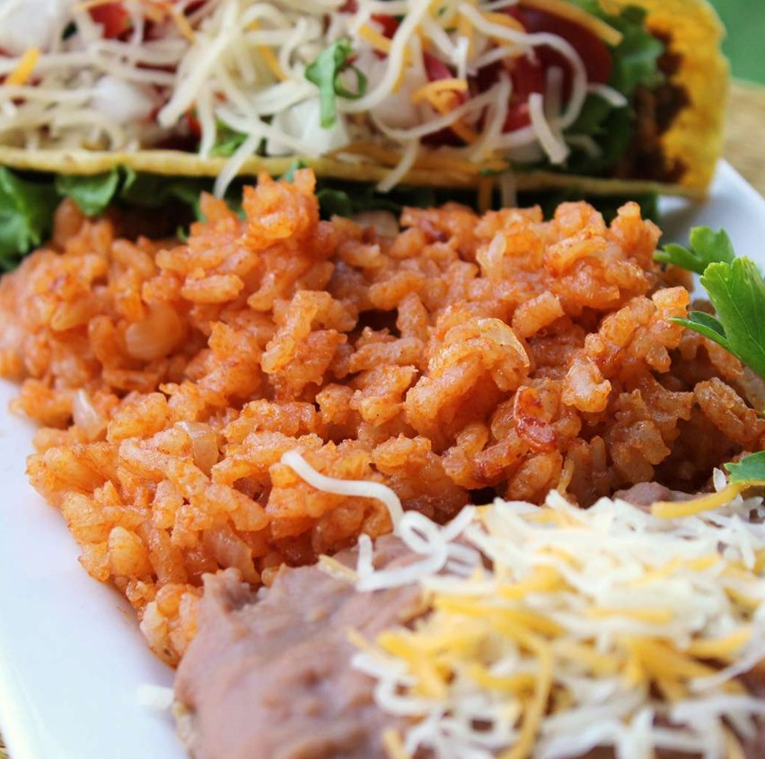

Mexican Rice

This fluffy Mexican rice recipe, seasoned with garlic salt and cumin, will
quickly become a go-to side dish in your household.
Ingredients
- Oil: Start with three tablespoons of vegetable oil.
-
Rice: A cup of uncooked long-grain rice should make about four servings.
-
Seasonings: Season the Mexican rice with garlic salt and ground cumin.
- Onion: A chopped onion adds flavor and texture.
- Broth: Use store-bought or homemade chicken broth.
- Use store-bought or homemade tomato sauce.
Steps
- Season the rice and cook in oil until puffed and golden.
- Add the onion and cook until the onion is softened.
- Stir in the broth and tomato sauce, then bring to a boil.
- Reduce to a simmer, cover, and cook for 20 more minutes.